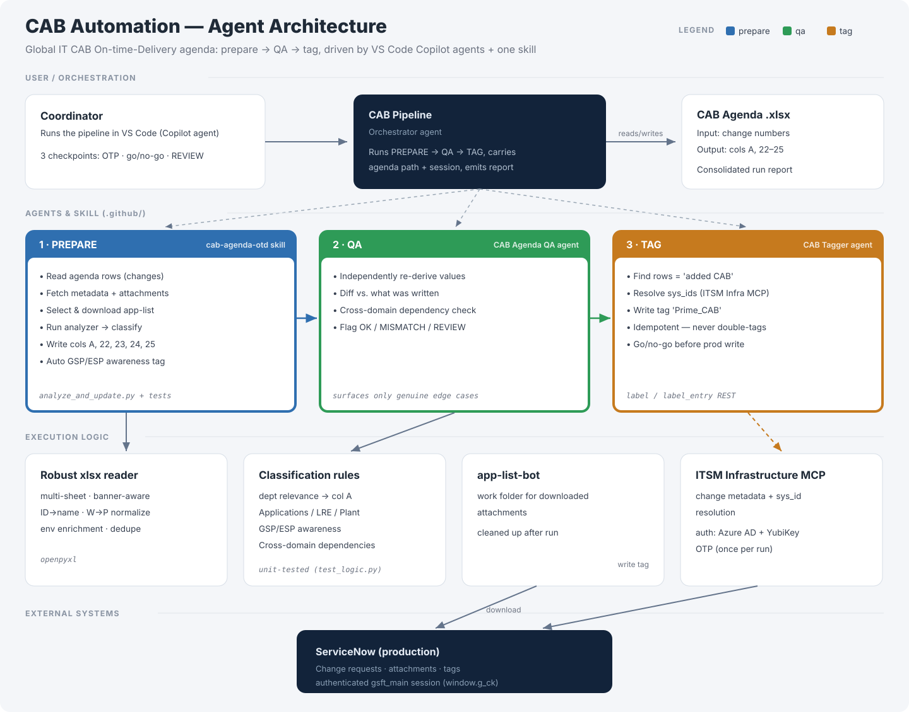

Agentic system that turns raw ServiceNow change records into a ready Change Advisory Board agenda. Cut weekly prep from ~4 hrs to 20 min while keeping a human approver in the loop. Acted as Product Owner.
Every month, the Global IT Change Advisory Board must decide which changes in ServiceNow are relevant for our department (IT for the plants), and record the affected applications, feedback groups and plants across. This file is called the CAB Agenda.
The task was manual, repetitive and very error-prone, with Excel as the main tool. Every single change had an attached Excel list, and this list had to be downloaded and opened to manually identify any applications relevant to our department. Afterwards, the applications were manually copied to the final CAB Agenda file, along with which departments and applications were affected. This created transcription errors, inconsistency and severe key-person risk. Moreover, the classification rules were never officially documented, meaning the know-how was just handed on. On average it required up to 4 hours of manual work each week, and it had to be completed as soon as possible so the CAB Agenda could be distributed to the relevant stakeholders.
The goal was to reduce the human and time intervention without losing the "human in the loop" concept. The agent should also be usable locally by other colleagues through GitHub Copilot in Visual Studio.
I designed and delivered an agentic automation that turns the process into a repeatable, rule-based pipeline with a human only at specific decision points. A single orchestrator agent runs three stages:

Fetches change metadata and the correct attachment from ServiceNow, parses heterogeneous spreadsheets (multi-sheet, name and plant normalization), applies the codified classification rules, and writes the agenda columns.
Independently re-derives every value and diffs it, flagging only true edge cases (OK / MISMATCH / REVIEW), including cross-domain dependency checks.
Tags relevant changes in production ServiceNow after an explicit go/no-go.
Human intervention is reduced to three checkpoints: one authentication, one go/no-go before the production write, and review of only the specific ambiguous rows.
Faster cycle time: CAB briefing preparation went down from ~4h/week to ~20 min/week. This translates into almost one working month per year.
Higher throughput: on average, ~30 change records processed per week, with 95% reaching the agenda without manual correction. This showed consistency and auditability.
Key-person risk eliminated: the briefing can be prepared by anyone with minimal knowledge in the team, instead of one person holding undocumented rules.
A clear roadmap to full autonomy: non-interactive auth, scheduling, confidence-gated auto-tagging, a user-friendly front-end UI, usable for other domains, and adaptability to the CAB plants.
The hardest part wasn't building the agents, but extracting and understanding the rules that lived in one person's head and were never written down. I had to reach out to different members of the Change Advisory Board to understand their needs. I discovered that the input variance across plants, applications and infrastructure was larger than expected, and a lot of testing time was needed to teach the agent.
In hindsight, I should have defined and recorded metrics before and after testing, so I could measure how the product improved over time as the learnings were implemented.
Agentic AI system design · requirements elicitation & rule formalization · human-in-the-loop safety design · product backlog & prioritization · ServiceNow / ITSM integration · secure automation practices.